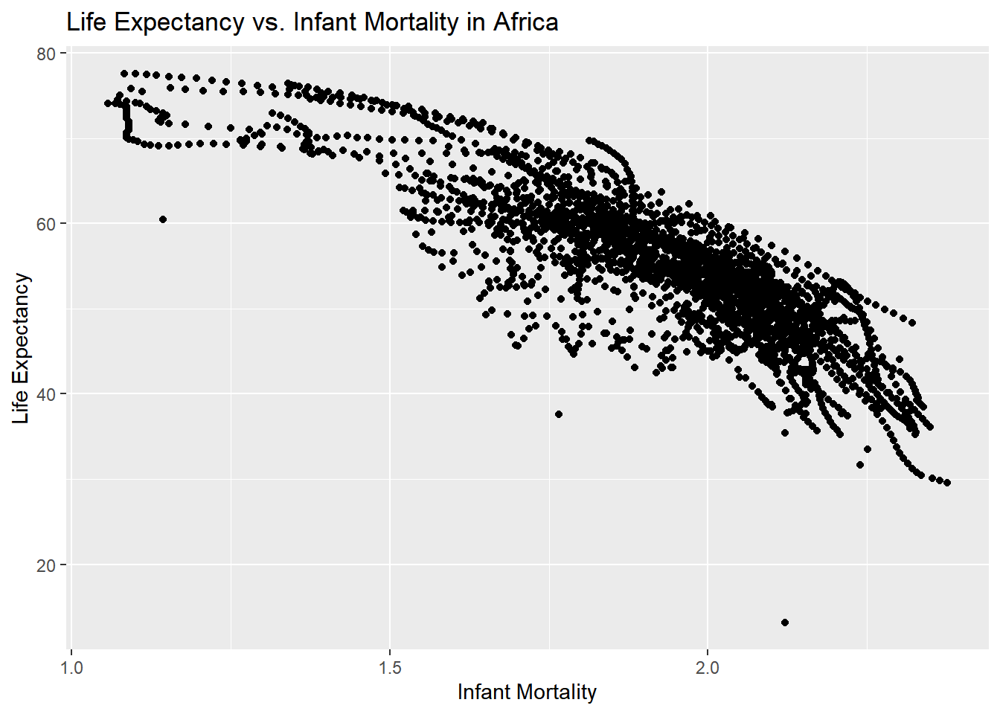
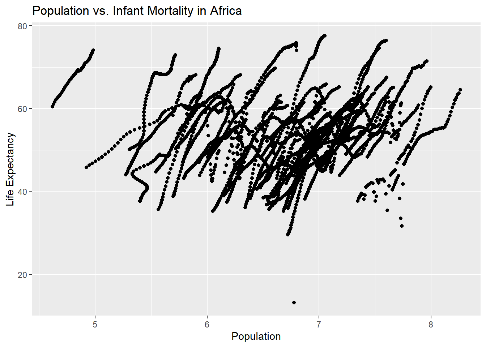

library(tidyverse)## -- Attaching packages --------------------------------------- tidyverse 1.3.1 --## v ggplot2 3.3.5 v purrr 0.3.4
## v tibble 3.1.3 v dplyr 1.0.7
## v tidyr 1.1.3 v stringr 1.4.0
## v readr 2.0.1 v forcats 0.5.1## -- Conflicts ------------------------------------------ tidyverse_conflicts() --
## x dplyr::filter() masks stats::filter()
## x dplyr::lag() masks stats::lag()library(ggplot2)
library(dslabs)
library(dplyr)#Look at help file for gapminder data.
help("gapminder") ## starting httpd help server ... donestr(gapminder)## 'data.frame': 10545 obs. of 9 variables:
## $ country : Factor w/ 185 levels "Albania","Algeria",..: 1 2 3 4 5 6 7 8 9 10 ...
## $ year : int 1960 1960 1960 1960 1960 1960 1960 1960 1960 1960 ...
## $ infant_mortality: num 115.4 148.2 208 NA 59.9 ...
## $ life_expectancy : num 62.9 47.5 36 63 65.4 ...
## $ fertility : num 6.19 7.65 7.32 4.43 3.11 4.55 4.82 3.45 2.7 5.57 ...
## $ population : num 1636054 11124892 5270844 54681 20619075 ...
## $ gdp : num NA 1.38e+10 NA NA 1.08e+11 ...
## $ continent : Factor w/ 5 levels "Africa","Americas",..: 4 1 1 2 2 3 2 5 4 3 ...
## $ region : Factor w/ 22 levels "Australia and New Zealand",..: 19 11 10 2 15 21 2 1 22 21 ...summary(gapminder)## country year infant_mortality life_expectancy
## Albania : 57 Min. :1960 Min. : 1.50 Min. :13.20
## Algeria : 57 1st Qu.:1974 1st Qu.: 16.00 1st Qu.:57.50
## Angola : 57 Median :1988 Median : 41.50 Median :67.54
## Antigua and Barbuda: 57 Mean :1988 Mean : 55.31 Mean :64.81
## Argentina : 57 3rd Qu.:2002 3rd Qu.: 85.10 3rd Qu.:73.00
## Armenia : 57 Max. :2016 Max. :276.90 Max. :83.90
## (Other) :10203 NA's :1453
## fertility population gdp continent
## Min. :0.840 Min. :3.124e+04 Min. :4.040e+07 Africa :2907
## 1st Qu.:2.200 1st Qu.:1.333e+06 1st Qu.:1.846e+09 Americas:2052
## Median :3.750 Median :5.009e+06 Median :7.794e+09 Asia :2679
## Mean :4.084 Mean :2.701e+07 Mean :1.480e+11 Europe :2223
## 3rd Qu.:6.000 3rd Qu.:1.523e+07 3rd Qu.:5.540e+10 Oceania : 684
## Max. :9.220 Max. :1.376e+09 Max. :1.174e+13
## NA's :187 NA's :185 NA's :2972
## region
## Western Asia :1026
## Eastern Africa : 912
## Western Africa : 912
## Caribbean : 741
## South America : 684
## Southern Europe: 684
## (Other) :5586class(gapminder)## [1] "data.frame"africadata <- subset(gapminder, continent == "Africa") str(africadata)## 'data.frame': 2907 obs. of 9 variables:
## $ country : Factor w/ 185 levels "Albania","Algeria",..: 2 3 18 22 26 27 29 31 32 33 ...
## $ year : int 1960 1960 1960 1960 1960 1960 1960 1960 1960 1960 ...
## $ infant_mortality: num 148 208 187 116 161 ...
## $ life_expectancy : num 47.5 36 38.3 50.3 35.2 ...
## $ fertility : num 7.65 7.32 6.28 6.62 6.29 6.95 5.65 6.89 5.84 6.25 ...
## $ population : num 11124892 5270844 2431620 524029 4829291 ...
## $ gdp : num 1.38e+10 NA 6.22e+08 1.24e+08 5.97e+08 ...
## $ continent : Factor w/ 5 levels "Africa","Americas",..: 1 1 1 1 1 1 1 1 1 1 ...
## $ region : Factor w/ 22 levels "Australia and New Zealand",..: 11 10 20 17 20 5 10 20 10 10 ...summary(africadata)## country year infant_mortality life_expectancy
## Algeria : 57 Min. :1960 Min. : 11.40 Min. :13.20
## Angola : 57 1st Qu.:1974 1st Qu.: 62.20 1st Qu.:48.23
## Benin : 57 Median :1988 Median : 93.40 Median :53.98
## Botswana : 57 Mean :1988 Mean : 95.12 Mean :54.38
## Burkina Faso: 57 3rd Qu.:2002 3rd Qu.:124.70 3rd Qu.:60.10
## Burundi : 57 Max. :2016 Max. :237.40 Max. :77.60
## (Other) :2565 NA's :226
## fertility population gdp continent
## Min. :1.500 Min. : 41538 Min. :4.659e+07 Africa :2907
## 1st Qu.:5.160 1st Qu.: 1605232 1st Qu.:8.373e+08 Americas: 0
## Median :6.160 Median : 5570982 Median :2.448e+09 Asia : 0
## Mean :5.851 Mean : 12235961 Mean :9.346e+09 Europe : 0
## 3rd Qu.:6.860 3rd Qu.: 13888152 3rd Qu.:6.552e+09 Oceania : 0
## Max. :8.450 Max. :182201962 Max. :1.935e+11
## NA's :51 NA's :51 NA's :637
## region
## Eastern Africa :912
## Western Africa :912
## Middle Africa :456
## Northern Africa :342
## Southern Africa :285
## Australia and New Zealand: 0
## (Other) : 0africa_infant <- africadata[c("infant_mortality","life_expectancy")]
str(africa_infant)## 'data.frame': 2907 obs. of 2 variables:
## $ infant_mortality: num 148 208 187 116 161 ...
## $ life_expectancy : num 47.5 36 38.3 50.3 35.2 ...summary(africa_infant)## infant_mortality life_expectancy
## Min. : 11.40 Min. :13.20
## 1st Qu.: 62.20 1st Qu.:48.23
## Median : 93.40 Median :53.98
## Mean : 95.12 Mean :54.38
## 3rd Qu.:124.70 3rd Qu.:60.10
## Max. :237.40 Max. :77.60
## NA's :226africa_population <- africadata[c("population","life_expectancy")]
str(africa_population)## 'data.frame': 2907 obs. of 2 variables:
## $ population : num 11124892 5270844 2431620 524029 4829291 ...
## $ life_expectancy: num 47.5 36 38.3 50.3 35.2 ...summary(africa_population) ## population life_expectancy
## Min. : 41538 Min. :13.20
## 1st Qu.: 1605232 1st Qu.:48.23
## Median : 5570982 Median :53.98
## Mean : 12235961 Mean :54.38
## 3rd Qu.: 13888152 3rd Qu.:60.10
## Max. :182201962 Max. :77.60
## NA's :51africa_infant_plot <- ggplot(africa_infant, aes(x = log10(infant_mortality), y = life_expectancy)) + geom_point() + ggtitle("Life Expectancy vs. Infant Mortality in Africa") + xlab("Infant Mortality") + ylab("Life Expectancy")
print(africa_infant_plot)## Warning: Removed 226 rows containing missing values (geom_point). #### Plot life expectancy as a function of population.
africa_population_plot <- ggplot(africa_population, aes(x = log10(population), y = life_expectancy)) + geom_point() + ggtitle("Population vs. Infant Mortality in Africa") + xlab("Population") + ylab("Life Expectancy")
print(africa_population_plot)## Warning: Removed 51 rows containing missing values (geom_point).
africadata_2000 <- africadata %>%
filter(year == 2000)str(africadata_2000)## 'data.frame': 51 obs. of 9 variables:
## $ country : Factor w/ 185 levels "Albania","Algeria",..: 2 3 18 22 26 27 29 31 32 33 ...
## $ year : int 2000 2000 2000 2000 2000 2000 2000 2000 2000 2000 ...
## $ infant_mortality: num 33.9 128.3 89.3 52.4 96.2 ...
## $ life_expectancy : num 73.3 52.3 57.2 47.6 52.6 46.7 54.3 68.4 45.3 51.5 ...
## $ fertility : num 2.51 6.84 5.98 3.41 6.59 7.06 5.62 3.7 5.45 7.35 ...
## $ population : num 31183658 15058638 6949366 1736579 11607944 ...
## $ gdp : num 5.48e+10 9.13e+09 2.25e+09 5.63e+09 2.61e+09 ...
## $ continent : Factor w/ 5 levels "Africa","Americas",..: 1 1 1 1 1 1 1 1 1 1 ...
## $ region : Factor w/ 22 levels "Australia and New Zealand",..: 11 10 20 17 20 5 10 20 10 10 ...#Fit-1: Life expectancy as the outcome, and infant mortality as the predictor
fit1 <- lm(africadata_2000$life_expectancy ~ africadata_2000$infant_mortality)
summary(fit1)##
## Call:
## lm(formula = africadata_2000$life_expectancy ~ africadata_2000$infant_mortality)
##
## Residuals:
## Min 1Q Median 3Q Max
## -22.6651 -3.7087 0.9914 4.0408 8.6817
##
## Coefficients:
## Estimate Std. Error t value Pr(>|t|)
## (Intercept) 71.29331 2.42611 29.386 < 2e-16 ***
## africadata_2000$infant_mortality -0.18916 0.02869 -6.594 2.83e-08 ***
## ---
## Signif. codes: 0 '***' 0.001 '**' 0.01 '*' 0.05 '.' 0.1 ' ' 1
##
## Residual standard error: 6.221 on 49 degrees of freedom
## Multiple R-squared: 0.4701, Adjusted R-squared: 0.4593
## F-statistic: 43.48 on 1 and 49 DF, p-value: 2.826e-08#Fit-2: Life expectancy as the outcome, and population size as the predictor
fit2 <- lm(africadata_2000$life_expectancy ~ africadata_2000$population)
summary(fit2)##
## Call:
## lm(formula = africadata_2000$life_expectancy ~ africadata_2000$population)
##
## Residuals:
## Min 1Q Median 3Q Max
## -18.429 -4.602 -2.568 3.800 18.802
##
## Coefficients:
## Estimate Std. Error t value Pr(>|t|)
## (Intercept) 5.593e+01 1.468e+00 38.097 <2e-16 ***
## africadata_2000$population 2.756e-08 5.459e-08 0.505 0.616
## ---
## Signif. codes: 0 '***' 0.001 '**' 0.01 '*' 0.05 '.' 0.1 ' ' 1
##
## Residual standard error: 8.524 on 49 degrees of freedom
## Multiple R-squared: 0.005176, Adjusted R-squared: -0.01513
## F-statistic: 0.2549 on 1 and 49 DF, p-value: 0.6159